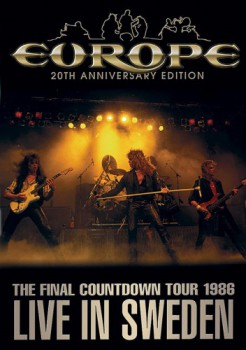

Country:United States, 115 minutes
Spoken languages:English
Genres:Music
Director(s):
Writer(s):
Video Codec:Unknown
Number: 3404

Certification:
Storyline:
The Final Countdown Tour 1986 is a concert video released by the Swedish hard rock band Europe. It features footage from a concert filmed at Solnahallen in Solna, Sweden on May 26, 1986. It was first released on VHS in Japan in 1986, and was released on DVD and CD in 2004. 1. The Final Countdown / 2. Ninja / 3. Carrie / 4. On the Loose / 5. Cherokee / 6. Time Has Come / 7. Open Your Heart / 8. Stormwind / 9. Rock the Night.
Cast:
Joey Tempest (as Vocals), John Norum (as Guitars), Ian Haugland (as Drums), John Levén (as Bass), Mic Michaeli (as Keyboards)
Medium: Media file,
Location: D:\The IT Crowd\Season 04\20 The Final Countdown.mp4
Loaned: No
Aspect ratio: Unknown